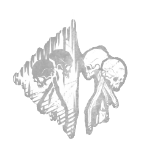

咒术：不朽 Hex: Undying
所属：枯萎者（杀手）
| 等级 | 档位 1 | 档位 2 | 档位 3 |
|---|---|---|---|
| 数值 | 2 3 | 3 | 4 |
描述
一种诅咒，维系着贯穿整场试炼的邪恶力量。 每当逃生者进入处于熄灭状态的图腾 2/3/4 米范围内时，诅咒：不朽触发其主要效果：显示该逃生者的光环。 每当诅咒：不朽图腾触发其次要效果时：将被净化的诅咒转移至与诅咒：不朽关联的诅咒图腾上，并由其取代。 诅咒效果将持续存在，直至该诅咒图腾被逃生者赐福或净化，从而在本场试炼的剩余时间内使其失效。

所属：枯萎者（杀手）
| 等级 | 档位 1 | 档位 2 | 档位 3 |
|---|---|---|---|
| 数值 | 2 3 | 3 | 4 |
一种诅咒，维系着贯穿整场试炼的邪恶力量。 每当逃生者进入处于熄灭状态的图腾 2/3/4 米范围内时，诅咒：不朽触发其主要效果：显示该逃生者的光环。 每当诅咒：不朽图腾触发其次要效果时：将被净化的诅咒转移至与诅咒：不朽关联的诅咒图腾上，并由其取代。 诅咒效果将持续存在，直至该诅咒图腾被逃生者赐福或净化，从而在本场试炼的剩余时间内使其失效。